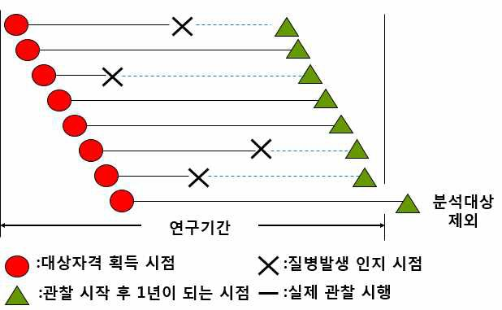
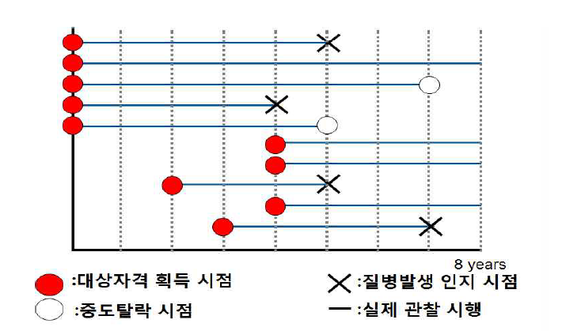

Chapter 4 환자 기반의 분석적 접근
4.1 대푯값, 분율, 비율
연구자료 분석의 첫 단계는 각 측정 결과나 변수들의 분포를 기술하는 것이다. 대 푯값은 자료를 대표하여 하나로 표현한 값이며, 평균, 중앙값, 최빈값 등이 있다. 평 균(mean) 중에서 가장 많이 사용하는 산술평균은 총 관찰값의 합을 전체 대상수(n) 로 나누어 산출한다. 중앙값(median)은 n개의 대상수가 있을 때 크기순으로 배열할 경우 중앙에 있는 값이다. 예를 들어 관찰값이 9개일 경우, 중앙값은 5번째 순위의 값이고, 관찰값이 10개일 때는 5, 6번째 값의 평균이 중앙값이 된다. 최빈값 (mode) 은 관찰값 중 도수가 가장 많은 값이 된다. 평균과 중앙값은 자료의 분포 모양에 대 한 정보를 제공한다. 정규분포를 따르는 경우 평균과 중앙값이 동일하지만, 왼쪽으로 기울어진 자료의 경우 중앙값이 평균보다 작게 된다.
인구집단의 특성을 요약할 때, 비(ratio), 분율(proportion), 비율(rate) 등을 이용하여 제시하게 된다. 비(ratio) 중, 단순비(simple ratio)는 두 사건의 상대적인 크기를 비교한 것으로 A에 대한 B의 비를 B/A로 계산하며, 0보다 큰 값으로 표현한다. 대표적으로 성비 (남자 수/여자 수), 1인당 지방 섭취량 (총 지방 소비랑/인구수), 체질량지수(BMI, 체중(kg)/ 신장(cm)2) 등이 있다. 대응비(Odds)는 동일한 조건하에 있는 집단에서 특정 현상이 있는 사람의 수와 없 는 사람의 수에 대한 단순비이다. 예를 들어 N부서의 직원 9명 중 흡연자가 6명 비 흡연자가 3명인 경우 흡연자의 대응비는 2로‘이 집단에서 흡연자는 비흡연자 1명에 대해 2명 꼴로 있다’라고 표현할 수 있다. 분율(proportion)은 비(ratio)의 한 형태로 분자가 반드시 분모에 포함되는 경우이다. 전체에서 특정 사건을 경험한 개체가 차지하는 정도를 의미하고, 0과 1사이 값을 가 진다. 예를 들어 전체 입원환자 100명 중 암으로 입원한 환자가 10명일 때 암 입원 분율은 10/100 = 10%이 된다. 비율(rate)은 특정 현상의 변동 속도를 표시하는 측도로, 단위시간 당 사건 수로 표 시한다.
[예시] 위암 수술환자 100명 중 위암수술 후 만 1년이 되는 시점까지 재발한 사람 이 40명이다.
- 위암 수술환자에서 재발환자 1명에 대해 재발하지 않은 환자는 몇 명인가(비)?
60 : 40 = 1.5:1
위암 수술환자에서 재발률(분율)은? 40 / 100 = 0.4
위암 수술환자에서 재발비율(비율)은? 40 / (60+20: 재발하지 않는 60명은 1년, 재발한 사람은 0.5년으로 계산)=0.5 / year
4.2 발생률, 유병률, 사망률
발생률(incidence)과 유병률(prevalence)은 역학연구에서 질병의 빈도를 제시할 때 널리 사용되는 역학 지표이다. 발생률은 기본적으로 질병발생의 위험성이 있는 인구 집단에서 특정 기간 동안 새롭게 발생한 사건 수를 의미하며, 발생률을 산출하기 위 해서는 전체 인구집단에서 해당 질병에 이환되어 있는 유병환자를 제외하고 추적관 찰하는 것이 필요하다. 분모의 형태에 따라 분율(누적 발생률, cumulative incidence) 과 비율(평균 발생률, incidence density)로 측정할 수 있다.
누적 발생률은 관찰 기간 동안 다른 이유로 중도에 탈락되지 않고 모두 특정기간 동안 관찰이 가능한 경우에 발생한 사건 수를 관찰 인구집단의 수로 나눠주어 산출 하는 것으로, 1년 발생률, 3년 발생률과 같이 관찰 기간을 명시해야 한다. 누적발생 률은 코호트 발생률 (cohort incidence rate), 발생 위험도(risk of incidence), 발생 분 율 (incidence proportion) 등과 동의어이다.

질병의 1년 발생률 = 4 / 7 = 57 %
\[1,000 명당 누적 발생률 =\frac{해당 기간에 질병이 발생한 인구 수}{해당 기간의 질병이 발생할 가능성이 있는 인구 수}\times 1,000 \]
발병률(attack rate)과 2차 발병률(secondary attack rate)은 rate이라는 표현 때문에 비율로 오해할 수 있으나 누적 발생률, 즉, 분율(proportion)의 한 형태이다. 발병률은 특정 질병의 발생이 한정된 기간에만 일어나는 경우에 산출하는 지표로 급성전염병 의 원인균에 폭로된 후 일정기간 내에서만 발생하는 질환의 발생률이 이에 해당한 다. 2차 발병률은 전염병 역학에서 주로 사용하는 누적 발생률로 해당 질병에 면역 이 없는 사람들이 발단 환자와 접촉하여 그 질병이 발생하는 율이다. 이를 통해 전 염성의 강도나 예방방법의 효과를 확인한다.
[예시] 4,399 명이 사는 마을에 원인불명의 괴질이 발병하여, 77 가구에서 총 115명 의 환자가 발생하였다. 괴질발병가구 77 가구에 살고 있는 사람은 모두 434명이다.
이 지역사회에서 괴질의 발병률은? 115 / 4,399= 2.6%
괴질 발생 가구당 한 명만이 1차 발병자(primary case, index case)라 가정한다면, 이들 가구에서의 2차 발병률은 ? 77명 → 115 명 → 434 명
추가 발병자 수 / 감수성 있는 가구원 수
(115-77) / (434-77) = 38 / 357=10.6%
평균 발생률은 발생한 사건수를 해당기간 동안 각 연구대상자의 관찰기간의 합 (인년, person-year)으로 나눠주어 산출한 값으로, 분자는 누적 발생률과 같으나 분모 가 다르다. 연구대상자마다 추적관찰기간이 일정하지 않은 들고나는 집단에서 발생 률을 산출할 때에도 이용할 수 있다. 평균 발생률은 incidence density rate, person-time incidence 등과 동의어이다.

질병 발생률 = 4 / (5+8+7+4+5+4+4+3+4+4) * 1 0 = 83. 3/1, 0 인년 (person-years)
\[ 1,000 인년당 평균 발생률 = \frac{해당 기간에 질병이 발생한 인구 수}{ 해당 기간의 질병이 발생할 가능성이 있는 각 대상자의 관찰기간의 합 (년)}\times 1,000 \]
유병률(prevalence)는 인구집단에서 질병 등 특정 상태를 가지고 있는 사람 수를 전체 인구집단의 수로 나눈 것으로 분율에 해당된다.
$$ 1,000 명당 유병률 = ,000
$$
유병률은 시점 유병률（point prevalence)와 기간 유병률 (period prevalence)로 제 시할 수 있다. 시점 유병률은 인구집단에서 한 사람이 특정 시점에서 유병자일 확률 을 의미한다.
특정 t 시점의 유병률은 t 시점의 유병자 수를 t 시점의 전체 대상자수로 나눠주어 산출한다. 기간 유병률은 인구집단에서 한 사람이 특정 기간 동안 어느 시점이던지 유병자일 확률을 의미하며, 분자는 관찰 시작 시점의 유병자수에 관찰 기간 동안 새 로이 발생한 환자수를 더한 값이고, 분모는 관찰 기간 동안의 전체 대상자수이다.
[예시] 2009년 3월 1일부터 3월 31일까지 한 달간 특정 지역에 거주하는 전체 주민 3,000명을 대상으로 흉부엑스선 촬영을 실시한 결과 60명의 결핵환자가 발견되었 다. 그 가운데 3월 1일 이전에 결핵으로 진단받아 치료를 받고 있던 환자는 20명이었다.
누적 발생률 (3월 한달 간)- 40 명 / 2,980 명
-3월 1일 이전 결핵 발생자 20명 제외평균 발생률 (3월 한달 간)- 40 명 / 2,960 인-월 (person-month)
-3월 1일 이전 결핵 발생자 20명 제외,-3월 1일 이전 결핵 발생자 20인-월 + 40명*0.5인-월 제외시점 유병률 (2월 28일 기준) - 20 명 / 3,000 명
기간 유병률 (3월 한달 간) - 60 명 / 3,000 명
사망률 (mortality rate)는 생정통계의 기본이 되는 지표로 복지 및 보건의료 정책 수립을 위한 자료로 사용된다. 사망률은 주로 연 사망률 형태로 산출하며, 분자는 해 당 년도에 사망한 인구수, 분모는 연앙인구 (해당 년도의 중앙인구)를 사용한다. 개 개인의 정확한 생존기간을 알기 어렵기 때문에 각 대상자의 추적관찰기간의 합의 근 사치로서 연앙인구를 이용한다.
\[ 1,000 명당 연 사망률 = \frac{해당 년도에 사망한 인구수}{연앙인구 (해당 년도의 중앙인구)}\times 1,000 \]
치명률(case fatality rate)은 해당 질병에 이환된 사람 중에서 그 질병으로 인해 사 망한 사람의 분율을 나타내는 지표로 해당 질병의 중증도를 가늠하는데 이용한다.
$$
1,000명당 치명률 =,000
$$
비례 사망률 (proportionate mortality rate)은 전체 사망자 중 특정 원인으로 사망한 사람수에 대한 분율이다. 우리나라에서 암의 비례사망률은 전체 사망자 중 암 사망자수의 분율이다.
\[ 2010년 암 비례사망률 = \frac{2010년 암으로 인한 사망자 수}{2010년 사망자 수}\times 1,000 \]
4.3 표준화법
발생률, 유병률, 사망률 등 역학 지표의 경우 서로 다른 인구집단에서 결과를 비교 하거나, 한 인구집단에서 다른 기간에 산출된 결과를 비교하는데 이용된다.
<볼티모어시의 이종 연령별 사망률
| 인종 | 전체 조사망률 | 연령별 조사망률(인구 1,000명당) | |||||
|---|---|---|---|---|---|---|---|
| <1 | 1-4 | 5-17 | 18-44 | 45-64 | >=65 | ||
| 백인 | 14.3 | 23.9 | 0.7 | 0.4 | 2.5 | 15.2 | 69.3 |
| 흑인 | 10.2 | 31.3 | 1.6 | 0.6 | 4.8 | 22.6 | 75.9 |
1965년 볼티모어시의 인종별 사망률을 나타내는 위 표에 따르면 백인의 조사망률 이 흑인에 비해 높은 것을 볼 수 있었는데, 이는 해당 시기의 생활여건, 의료환경이 백인에 비해 열악하였음을 고려할 때 해석하기 쉽지 않은 결과였다. 하지만, 각 연령 별 조사망률을 보았을 때 일관적으로 흑인에서 높게 나타났으며 전체 조사망률에 따 른 판단보다는 인구구조를 고려한 사망률에 대한 평가가 필요한 것을 확인할 수 있 었다.
위의 예시처럼, 연령, 성별 등 역학 지표에 영향을 주는 특성이 각 인구집단에 따 라 분포가 달라 조사망률 등 보정하지 않은 값을 이용하는데 한계가 있다. 연령 등 중요한 특성을 두 군에서 동일하도록 지표를 비교하는 표준화법 (standardized method)을 적용할 수 있다.
직접표준화법 (direct standardized method)
두 집단의 사망률을 연령 표준화 한다고 할 경우, 직접표준화법의 경우 표준화하 고자 하는 두 집단의 각 연령구간 별 사망률, 표준 인구집단의 연령구간 별 인구수 에 대한 정보가 필요하다. 연령에 대한 직접표준화의 단계는 다음과 같다.
- 연령별 인구수를 알고 있는 표준집단을 선정함
- 비교하고자 하는 두 집단 (A,B 집단)의 연령별 율을 표준인구에 적용하여 표준 인구에서의 연령별 기대빈도수를 산출함
- 각 집단의 연령별 기대빈도수를 합하여 표준집단의 총수로 나눔
[예제] 직접 표준화 방법
| A지역 | B지역 | |
|---|---|---|
| 20-44 | 2.2 | 4.0 |
| 45-64 | 2.6 | 4.4 |
| 65-99 | 7.1 | 5.3 |
| 조발생률 | 4.2 | 4.6 |
심사평가원 자료를 이용하여 분석한 A, B 지역의 X 질병의 1,000명당 조 발생률이 각각 4.2, 4.6이었다. 이를 2010년 통계청 인구총조사 자료를 이용하여 연령 표준화 하여 비교하고자 한다.
- 연령별 인구수를 알고 있는 표준집단을 선정한다.
<표> 연령별 인구수를 알고 있는 표준집단을 선정
| A지역 | B지역 | 인구총조사 | |
|---|---|---|---|
| 20-44 | 2.2 | 4.0 | 18,520,287 |
| 45-64 | 2.6 | 4.4 | 12,820,420 |
| 65-99 | 7.1 | 5.3 | 5,422,832 |
| 조발생률 | 4.2 | 4.6 | |
| 총 인구수 | 36,763,539 |
- 인구 1,000명당 발생률임
- 표준 인구에서의 연령별 기대빈도수를 산출한다.
<표> 표준 인구에서의 연령별 기대빈도수를 산출
| A지역 | B지역 | 인구총조사 | 기대빈도(A지역) | 기대빈도(B)지역 | |
|---|---|---|---|---|---|
| 20-44 | 2.2 | 4.0 | 18,520,287 | 2.2*0.001*18,520,287=40,929 | 74,716 |
| 45-64 | 2.6 | 4.4 | 12,820,420 | 33,795 | 56,403 |
| 65-99 | 7.1 | 5.3 | 5,422,832 | 38,541 | 29,010 |
| 조발생률 | 4.2 | 4.6 | |||
| 총 인구수 | 36,763,539 |
- 연령별 기대빈도수를 합하여 표준집단의 총수로 나눈다.
<표> 연령별 기대빈도수를 합하여 표준집단의 총수로 나눔
| A지역 | B지역 | 인구총조사 | 기대빈도(A지역) | 기대빈도(B)지역 | |
|---|---|---|---|---|---|
| 조발생률 | 4.2 | 4.6 | |||
| 총 인구수 | 36,763,539 | ||||
| 기대 빈도수의 합 | 113,265 | 160,129 | |||
| 연령 보정 발생률 | 113,265/36,763,539*1,000=3.1 | 4.4 |
간접표준화법(indirect standardized method)
간접표준화법은 연령군 별 지표를 모르고 사망 또는 발생자의 총 수만 아는 경우 에 주로 사용된다. 또한, 특정 집단에서의 사망건수가 매우 적어서 연령별 산출이 불 안정하여 직접표준화법의 적용이 어려운 경우에도 적용한다. 연령에 대한 간접표준 화의 단계는 다음과 같다.
- 표준인구집단의 연령별 율 (표준율)을 선정한다.
- 비교하고자 하는 집단 (A 집단)의 연령별 총수에 연령별 율을 곱하여 기대빈도 수를 산출한다.
- A집단에서 실제 관찰된 빈도 총수를 기대빈도수의 합으로 나누어 표준화 (발생, 유병, 사망)비를 산출한다.
- 표준인구집단의 전체 율 (crude rate)에 표준화 비를 곱하여 보정된 표준화 율 (age-adjusted rate)을 산출한다.
[예제] 간접 표준화 방법
1950년 미국에서 백인남자광부 534,533명 중, 결핵으로 436명이 사망한 것으로 집 계되었다. 백인남자광부의 결핵 사망률이 일반인구집단의 백인남성보다 높은가? 전체 백인남성의 결핵 사망률은 10.9/1,000이었다. 1) 표준인구집단 (일반인구집단 중 백인남성)의 연령별 결핵 사망율 (표준율)을 선정한다. 2) 비교하고자 하는 집단 (백인남자광부)의 연령별 총수에 연령별 율을 곱하여 기 대빈도수를 산출한다. 3) 백인 남자 광부 집단에서 실제 관찰된 빈도 총수를 기대빈도수의 합으로 나누 어 표준화 사망비를 산출한다.
<표> 표준화 사망비 산출
| 연령 | 1) 표준인구집단의 결핵 사망률(100,000명 당) | 2) 백인 남자 광부의 연령별 인구수 | 3) 기대빈도수 |
|---|---|---|---|
| 20-24 | 12.26 | 74,598 | 9.14 |
| 25-29 | 16.12 | 85,077 | 13.71 |
| 30-34 | 21.54 | 80,845 | 17.41 |
| 35-44 | 33.96 | 148,870 | 50.55 |
| 45-54 | 56.82 | 102,649 | 58.32 |
| 55-59 | 75.23 | 42,494 | 31.96 |
| Total | 181.09 |
표준화 사망비 (Standardized mortality ratio)
= Total observed deaths / Total expected deaths
= 436 / 181.09 * 100 = 241% (또는 2.41)
- 표준인구집단의 전체 율 (crude rate)에 표준화 비를 곱하여 백인 남자 광부 집 단의 보정된 표준화 율(age-adjusted rate)을 산출함.
Age-adjusted rate = 10.9/1,000 * 2.41 = 26.3/1,000
4.4 상대위험도(relative risk), 오즈비(odds ratio)
역학연구에서 요인-질병간의 관련성을 평가하기 위한 지표로 상대위험도(relative risk, RR)와 오즈비(odds ratio, OR)를 이용한다. 상대위험도 (relative risk)는 질병의 원인으로 가정한 특정 요인에 노출된 환자군 과, 노출되지 않은 환자군으로 각각 인구집단을 구성하고, 각 집단에서 산출된 질병 발생률을 나눈 비(ratio)로 코호트 연구를 통해 산출되는 지표이다.
<표> 질병 발생 노출 유무
| 요인 노출 | 질병 발생(사례군) | 비 발생(대조군) | 추적관찰 기간의 합 |
|---|---|---|---|
| 노출됨 | a | b | T1 |
| 노출되지 않음 | c | d | T0 |
\[ 상대위험도 (RR) =\frac{요인 노출군의 질병 발생율}{요인 비노출군의 질병 발생율}=\frac{a / (a+b)}{c / (c+d)}=\frac{a / T1}{c / T0} \]
오즈비는 대푯값, 분율, 비율에서 설명한 대응비(Odds)의 비로, 환자-대조군 연구에서 환자군의 요인 노출에 대한 대응비를 대조군의 요인 노출에 대한 대응비로 나눈 값이다.
\[ 요인노출에 대한 오즈비 (OR) =\frac{환자군에서 요인 노출에 대한 오즈}{대조군에서 요인 노출에 대한 오즈}=\frac{a/c}{b/d}=\frac{a\times d}{b\times d} \]
이는 요인노출에 따라 군을 나눠 질병발생에 대한 대응비를 나타낸 값과 동일하며, 오즈비는 코호트 연구, 환자-대조군 연구에서 모두 사용할 수 있는 지표이다.
\[ 질병발생에 대한 오즈비 (OR) =\frac{요인 노출군에서 질병 발생에 대한 오즈}{요인 비노출군에서 질병 발생에 대한 오즈}=\frac{a / b}{c / d}=\frac{a\times d}{b\times c} \]